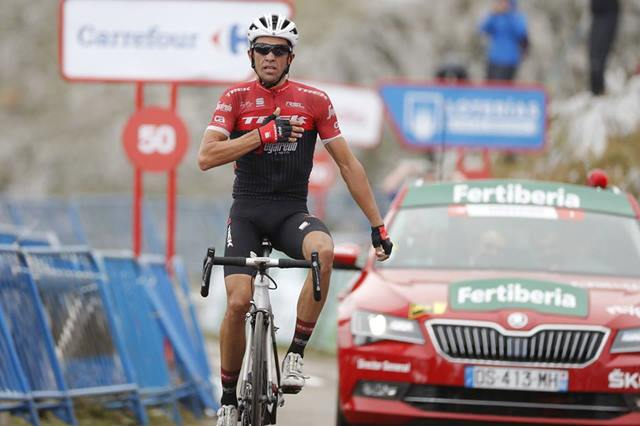

Día Mundial de la Bicicleta
Banner Conmemorativo:
Bicicleta:
Bicicleta:
Lo único que está claro es que la bicicleta es un invento europeo. Dependiendo de lo que consideremos una bicicleta existen unas fechas u otras, siendo la primera bicicleta a pedales patentada como tal y a partir de la cual ha evolucionado la industria en el siglo XX la del británico John Kemp Starley en 1885, si bien es cierto que se basó en los modelos europeos construidos a lo largo de todo el siglo XIX.
Existe la creencia de que Leonardo Da Vinci creó el primer boceto en papel de una bicicleta (¡que incluía hasta la cadena de transmisión!) a finales del siglo XV, pero el investigador alemán Hans-Erhard Lessing demostró en 1997 que el diseño se introdujo en los documentos de Leonardo a partir de 1961. También a finales del siglo XVIII, un francés, el conde de Sivrac habría inventado el celerífero, un primitivo cuadro sobre dos ruedas con una cabeza de animal, pero autores como Max Rauck, Gerd Volke y Felix Paturi han desmentido esta fecha atribuyéndola a antiguas rivalidades nacionalistas entre franceses y alemanes.

La bicicleta además de beneficiar a la salud, ya que para el sistema cardiovascular es recomendable y para la actividad física, lo es también como un medio de transporte, por supuesto no tiene el alcance en velocidad que puede tener una moto o un automóvil, pero si tiene otras ventajas que han hecho que su uso sea importante y que por muchas generaciones siga estando vigente.
La bicicleta sí es efectiva como medio de transporte para distancias no tan extensas, para usarla dentro de una ciudad o pueblo es de mucha utilidad.


Las bicicletas de montaña (también conocidas como MTB) están diseñadas para “fuera de ruta” por lo que son bastante resistentes. Están equipadas con llantas anchas con dibujos marcados para mejorar el agarre en terrenos sueltos. Regularmente usan manubrios rectos o de doble altura.
Las MTB se pueden encontrar sin suspensión (rígidas), con suspensión delantera (hardtail) o con doble suspensión (full-suspension) dependiendo de su especialidad:
Cross country
Enduro
Downhill
Freeride

Son bicicletas orientadas a obtener velocidad en pavimento, de construcción más ligera que otras bicicleta, están dotadas con ruedas más grandes, delgadas y provistas de llantas angostas y con dibujo liso. Las bicis de ruta utilizan manubrios drop-bar para lograr una postura más aerodinámica.

Las bicicletas híbridas son bastante versátiles ya que combinan características de las bicis de montaña y de las de ruta.Estas bicicletas nacieron como una solución para quienes necesitan una bicicleta para la ciudad, pero que tenga la flexibilidad de ser usada en diferentes terrenos. Los cuadros son resistentes y con una geometría que permite adoptar una posición cómoda que permite relajar los brazos y el cuello.

En este caso nos referimos como bicicleta urbana a las bicis estilo holandés (Dutch).
Estas bicicletas fueron concebidas para la ciudad, por lo que son de construcción bastante solida tanto en su cuadro como en sus ruedas. Están perfectamente adecuadas para soportar las condiciones de una ciudad (baches, banquetas, topes, etc.)
Por lo general cuenta con guardabarros para días de lluvia, portaequipaje y/o canasta para transportar todo lo que necesitas para ir al trabajo, al supermercado, etc. Una característica común en este tipo de bicicletas es la presencia de luces para mantenernos siempre visibles a los conductores.
Normalmente tienen una sola velocidad, o sistema de cambios internos de ser necesario.
Estas bicicletas permiten una posición relajada de torso y brazos.

La gran mayoría de estas bicicletas usan ruedas pequeñas, siendo 16 y 20″ las más comunes, aunque es posible encontrar plegables con rodados más convencionales. Casi todas las plegables están diseñadas para uso urbano, no obstante existen modelos que aguantan viajes largos sin problemas.
Un inconveniente de de las ruedas pequeñas es que son más sensibles a las imperfecciones del camino, aunque si lo que necesitas es una bici que puedes llevar contigo en todo momento no hay como una plegable.
En general vienen equipadas con 18- 20 cambios.

Si bien su conceptp es el de ser una bicicleta sencilla, se han convertido en algo así como las bicicletas de culto para el ciclismo urbano. Su principal característica es su diseño simple y en muchos casos minimalista, sumamente eficientes y funcionales.
Esta familia de bicis viene en varias formas y estilos; las hay con manubrios rectos, de doble altura, drop bars, bullhorns, etc.
Están equipadas con una sola velocidad por lo que requieren mucho menos mantenimiento que otras bicicletas. La diferencia entre las single-speed y las fixies es que en las single-speed utilizan una rueda libre, mientras que las fixies utilizan un piñón fijo.

Este tipo de bicicletas están diseñadas para trayectos cortos y sobre pavimento preferencialmente. Su geometría y manubrio característico permiten una postura sumamente relajada. Estas bicicletas suelen ser pesadas y usan llantas anchas lo que las hace poco eficientes en trayectos de más de 10km. Normalmente tienen una sola velocidad aunque algunos fabricantes tienen modelos con tres velocidades. Otra característica común en las cruiser son los frenos de contrapedal.

Las BMX utilizan cuadros pequeños y resistentes, ideales para saltos y acrobacias. Existen diferentes variables de estas bicicletas, algunas con llantas anchas para usarse en terrenos sueltos y otras con llantas un poco más delgadas y lisas para usarse en rampas o en la calle. Estas bicicletas no son eficientes como medio de transporte.

Estas bicicletas se usan para recorrer largas distancias y cargar peso. Sus cuadros son muy robustos e incluyen monturas para instalar rack trasero y delantero además de varias caramañolas. Aunque la gran mayoría de estas bicicletas utilizan drop-bars también son comunes los manubrios de trekking, rectos y de doble altura, dependiendo del tipo de viaje que se vaya a realizar.
Tienen un gran rango de velocidades: suficientemente bajas que facilitan subir pendientes bastante pronunciadas al estar completamente cargadas y velocidades altas para mantener la velocidad aun en las bajadas. Están equipadas con frenos potentes, generalmente frenos de disco o cantilever (los tradicionales).Los rodados comunes son de 26″

En la actualidad se puede encontar versiones de pedaleo asistido (eléctricas) de casi cualquier tipo de bicicleta. Las bicicletas eléctricas son todas aquellas bicis que utilizan un motor para asistir el pedaleo. Su principal ventaja es a la hora de subir pendientes, pedalear contra el viento (hay lugares donde el viento es muy intenso) o para quien tiene que pedalear largas distancias para ir al trabajo y quiere reducir el esfuerzo. Por otro lado estas bicis son más costosas y pesadas que el resto. Quieres ver algunas?
Al ser utilizadas para mover carga, esta familia de bicis utilizan cuadros sumamente fuertes, con un buen sistema de frenos (frenos de disco, tambor, son comunes) y una relación de velocidades adecuada para mover el peso extra. Existen bicis cargo de diferentes tipos y diferentes capacidades dependiendo de lo que se vaya a mover. Otra variante es el tipo de area de carga y el posicionamiento de la carga:
Sobre la rueda delantera, trasera o ambas
Entre el manubrio y la rueda delantera mejor conocidas como Long John
Detrás del ciclista conocidas como Longtail
Entre ruedas paralelas ya sea delanteras o traseras (triciclos)

Son de reciente aparición y su uso principal es sobre terrenos con nieve o arena, grandes piedras, raíces, et. La principal característica de estas bicicletas son sus llantas rodado 26″ sumamente anchas (normalmente de entre 3 y 3.6 pulgadas). La geometría de su cuadro es muy similar a una bicicleta de montaña con la diferencia de que usa tijera/horquilla y vainas con holgura adecuada para las ruedas gordas. Estas bicis están equipadas con velocidades múltiples y frenos de disco.
Cómo no podía ser de otra manera encabeza la lista la prestigiosa marca americana. La firma de la “s” es, indiscutiblemente, y por méritos propios, la mejor marca de bicicletas del mundo. A su favor juega la indudable calidad de todos sus productos y el enorme prestigio del que goza entre los usuarios del mundo ciclista. Los de Morgan Hill llevan años jugando en otra liga y son referentes en absolutamente todas las facetas de mercado. Cuadros de bicicleta, componentes, ropa y complementos. Su cuota de mercado, especialmente en bicicletas de gama media-alta es espectacular y sus ventas por todo el mundo lo atestiguan.

La marca Suiza sigue creciendo y parece dispuesta a seguir el camino de Specialized ampliando su cartera de productos a prácticamente todo el sector ciclista. Scott ya fábrica a día de hoy, además de bicicletas, cascos, zapatillas, gafas y ropa entre otros complementos, consiguiendo así fidelizar gran parte de sus clientes.
Trek es una de las mejores marcas del mercado, y pese a su bajón mediático con la polémica de Lance Armstrong, siempre ha sido una de las más populares entre los aficionados al mundo del ciclismo. Esto le permite vender gran cantidad de bicicletas de todo a tipo y a todo el mundo, gozando de una excelente presencia en el mercado americano. Precisamente con el fin de corregir esa mala imagen que les dejo Lance Armstrong, decidieron crear su propio equipo ciclista profesional (Trek Segafredo) y volver a cambiar, junto a la figura de Alberto Contador, su imagen de marca. Tras su retirada podría ser uno de sus embajadores de la marca a nivel mundial.

En cuarta posición tenemos al mayor fabricante de bicicletas del mundo (fabrica también para terceros). La empresa con sede en Taiwan es un referente en cuanto a comodidad. Sus bicicletas son tremendamente cómodas y pese a que sus diseños y geometrías no han sido, hasta el momento, demasiado agresivas, siguen gustando a un público más clásico. Giant ha sido pionero en el mundo ciclista, por ejemplo inventando la primera bicicleta de carretera con sloping bajo. La valoración de aquellos que han tenido una Giant generalmente es muy buena.

La quinta posición está ocupada por un “rara avis” del sector. Canyon es la única marca de bicicletas que solo vende por internet y que no ofrece sus bicicletas en tienda física. Pese a contar, a priori, con este “hándicap” la marca es conocida por prácticamente todos los ciclistas de carretera y la enorme calidad de sus productos goza de una muy buena consideración entre los aficionados y profesionales del sector.

El 19 de abril, se celebra el Día Mundial de la Bicicleta con el objetivo de promocionar este medio de transporte y llamar la atención sobre los derechos de los ciclistas.
Se celebra este día, porque el 19 de abril de 1943 el doctor Albert Hofmann, padre del LSD, ingirió a propósito 250 µg de LSD. Tras ingerir la sustancia, Hofmann sintió que le costaba hablar de forma inteligible y pidió a su asistente de laboratorio, que estaba al tanto del experimento, que le acompañase en su viaje a casa en bicicleta, pues, por las restricciones del período de guerra, no había automóviles disponibles.
Mas Información